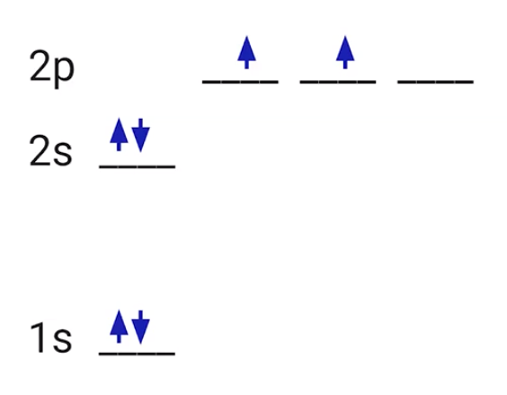
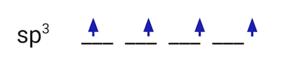

{width="3.9166666666666665in" height="3.0416666666666665in"}
<!-- -->
Hybrid orbitals
These standard atomic orbitals (2s, 2p, ...) only apply to individual atoms
When bonds form, these orbitals may turn into new hybrid orbitals
Hybrid orbitals are formed by two or more atomic orbitals
For carbon: the 2s and 2p orbitals form a hybrid sp^3^ orbital
{width="4.041666666666667in" height="0.8645833333333334in"}
sp^3^, meaning 1 s orbital (s) and 3 p orbitals (p^3^)
Hybrid orbitals:
Central atom with an sp^3^ hybridization => 4 electron domains
{width="4.041666666666667in" height="0.8645833333333334in"}
4 single bonds, 3 single bonds and a lone pair, ...
Central atom with sp^2^ hybridization => 3 electron domains
2 single bonds and 1 double bond, 1 double bond and 2 lone pairs, ...)
Central atom with sp hybridization => 2 electron domains
1 triple bond and 1 single bond, 2 double bonds